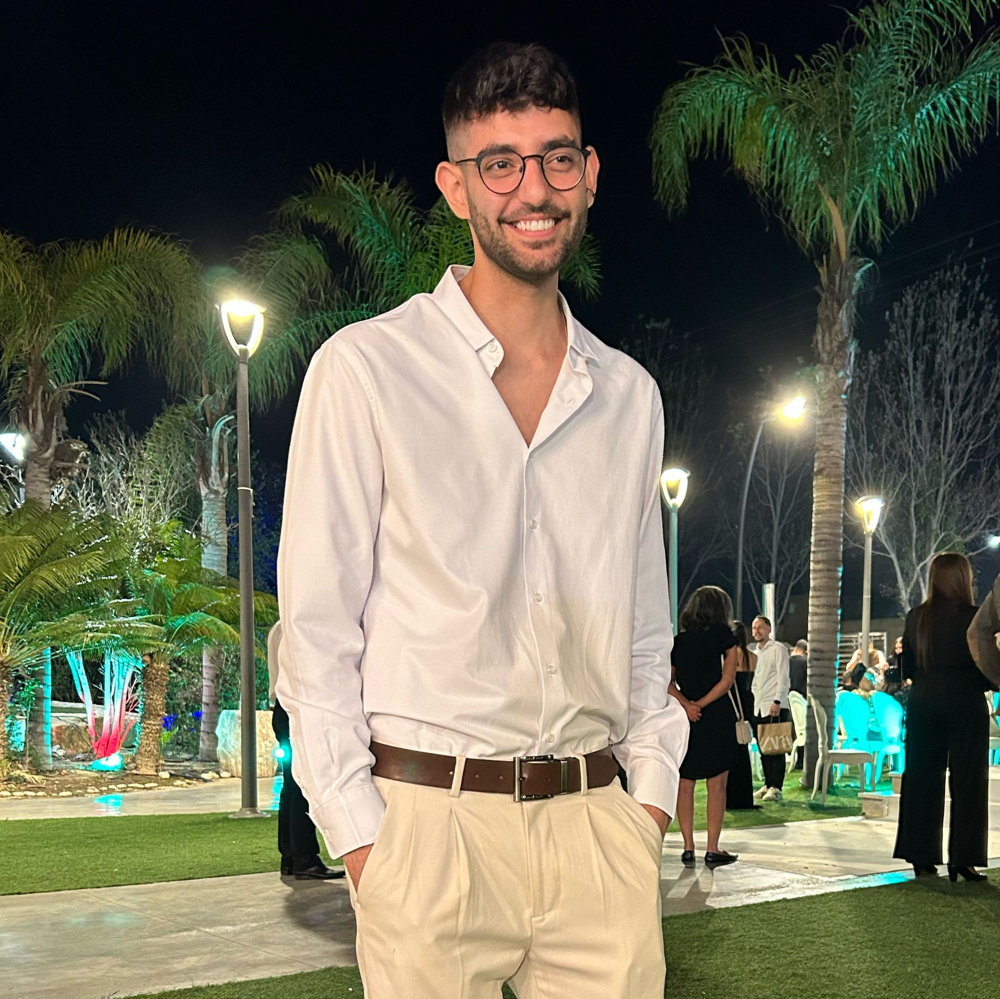

Diego Calp - CV
Industrial Engineering And Management Student At Ben-Gurion University Third year

Summary
With experience as an analyst at a real estate startup.
Military service: Intelligence researcher in a classified unit within the Special Operations Array of the Intelligence Corps.
High learning abilities, creativity, initiative, motivation for innovation, excellent interpersonal skills, high time management ability, good familiarity with complex computing systems. Fostering productive working relationships and achieving collective goals.
Education
- Ben-Gurion University - Industrial Engineering and Management Student Third Year (2022-now)
- High School - Makif D (2012-2017)
- University courses (2014-2015)
- Communication course.
- Biotechnology course.
Work Experience
Data Analyst - InFlow
June 2021 - September 2022
- Leading the development of the web research field in the company and developing research methods that serve the needs of the new company, reporting to the CEO.
- Conducting in-depth research on companies, individuals, and various areas in the real estate world
according to the project's requirements.
- Presenting projects and solutions to customers and various ranks within the company.
- Delving into the field of solar energy.
- Working with GIS (Geographic Information System) and Excel for data management and analysis in the company.
- Working on multiple projects simultaneously and working under high pressure.
- Creativity, teamwork, and brainstorming to find different research solutions according to customer requirements.
Military Service - Intelligence Researcher
April 2018 - December 2020
- Leading projects in the unit's intelligence operational and community core, including information collection, intelligence implications, database data extraction and characterization, managing relationships with stakeholders, building finished products, and presenting them to senior stakeholders.
- High personal teamwork skills, responsible for personal work packages and broad vision of all project contents.
- High training and mentoring skills - providing professional guidance to new soldiers and relief.
- Leading social projects - from planning activities to building them with senior stakeholders and transferring them to soldiers.
- Full dedication to projects - reflected in a sense of responsibility, long working hours, an intensive daily routine, and constant demand for excellence, time management, and task management skills.
Skills
- SQL: ★★★★★
- TeamWork: ★★★★★
- Problem-solving: ★★★★
- Research abilities: ★★★★★
- C# an Java: ★★★★★
- Time Managment: ★★★
- Analytical thinking: ★★★★
Other